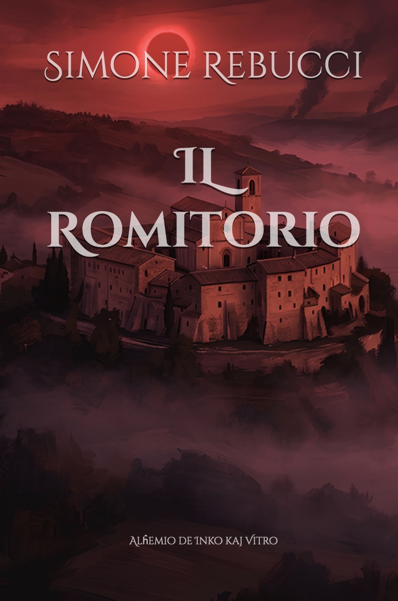
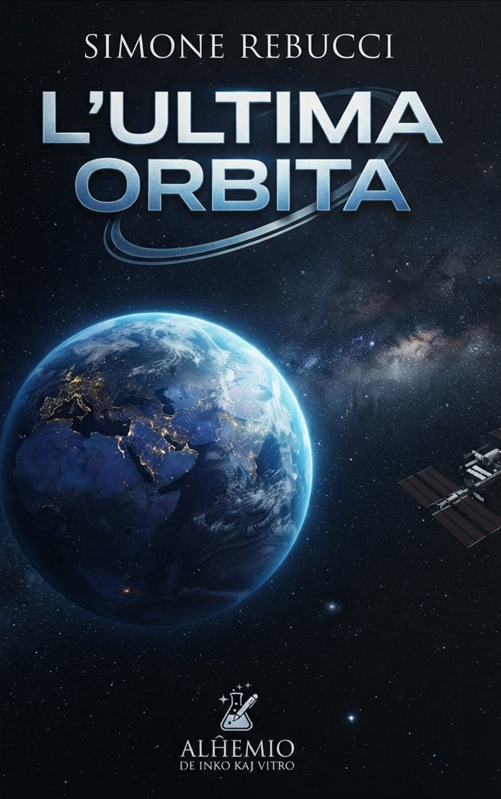

ROMANZO CORALE
Il Romitorio
Quattordici sconosciuti, sette giorni di silenzio e un luogo remoto tra le colline umbre. Un viaggio interiore che cambia per sempre.
Scopri il libro →LIBRI · SIMONE REBUCCI
Dal silenzio che ci mette di fronte a noi stessi allo spazio che mette alla prova tutto ciò che crediamo di sapere.

ROMANZO CORALE
Quattordici sconosciuti, sette giorni di silenzio e un luogo remoto tra le colline umbre. Un viaggio interiore che cambia per sempre.
Scopri il libro →
FANTASCIENZA
La Selena IV rientra dalla Luna, ma la Terra non risponde più. Un viaggio tra tecnologia, suspense e scelte umane.
Scopri il libro →